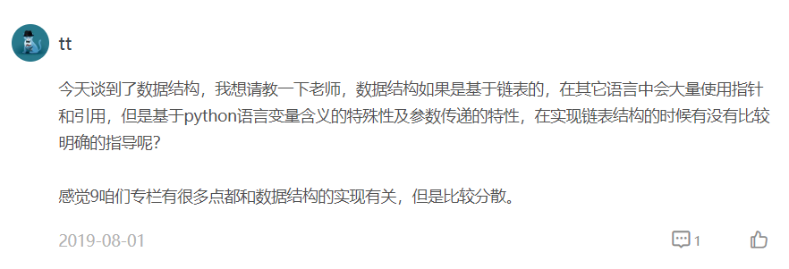

- 00 开篇词 从工程的角度深入理解Python.md
- 01 如何逐步突破，成为Python高手？.md
- 02 Jupyter Notebook为什么是现代Python的必学技术？.md
- 03 列表和元组，到底用哪一个？.md
- 04 字典、集合，你真的了解吗？.md
- 05 深入浅出字符串.md
- 06 Python “黑箱”：输入与输出.md
- 07 修炼基本功：条件与循环.md
- 08 异常处理：如何提高程序的稳定性？.md
- 09 不可或缺的自定义函数.md
- 10 简约不简单的匿名函数.md
- 11 面向对象（上）：从生活中的类比说起.md
- 12 面向对象（下）：如何实现一个搜索引擎？.md
- 13 搭建积木：Python 模块化.md
- 14 答疑（一）：列表和元组的内部实现是怎样的？.md
- 15 Python对象的比较、拷贝.md
- 16 值传递，引用传递or其他，Python里参数是如何传递的？.md
- 17 强大的装饰器.md
- 18 metaclass，是潘多拉魔盒还是阿拉丁神灯？.md
- 19 深入理解迭代器和生成器.md
- 20 揭秘 Python 协程.md
- 21 Python并发编程之Futures.md
- 22 并发编程之Asyncio.md
- 23 你真的懂Python GIL（全局解释器锁）吗？.md
- 24 带你解析 Python 垃圾回收机制.md
- 25 答疑（二）：GIL与多线程是什么关系呢？.md
- 26 活都来不及干了，还有空注意代码风格？！.md
- 27 学会合理分解代码，提高代码可读性.md
- 28 如何合理利用assert？.md
- 29 巧用上下文管理器和With语句精简代码.md
- 30 真的有必要写单元测试吗？.md
- 31 pdb & cProfile：调试和性能分析的法宝.md
- 32 答疑（三）：如何选择合适的异常处理方式？.md
- 33 带你初探量化世界.md
- 34 RESTful & Socket：搭建交易执行层核心.md
- 35 RESTful & Socket：行情数据对接和抓取.md
- 36 Pandas & Numpy：策略与回测系统.md
- 37 Kafka & ZMQ：自动化交易流水线.md
- 38 MySQL：日志和数据存储系统.md
- 39 Django：搭建监控平台.md
- 40 总结：Python中的数据结构与算法全景.md
- 41 硅谷一线互联网公司的工作体验.md
- 42 细数技术研发的注意事项.md
- 43 Q&A：聊一聊职业发展和选择.md
- 加餐 带你上手SWIG：一份清晰好用的SWIG编程实践指南.md
- 结束语 技术之外的几点成长建议.md
40 总结：Python中的数据结构与算法全景
你好，我是景霄。
不知不觉中，我们又一起完成了量化交易实战篇的学习。我非常高兴看到很多同学一直在坚持积极地学习，并且留下了很多高质量的留言，值得我们互相思考交流。也有一些同学反复推敲，指出了文章中一些表达不严谨或是不当的地方，我也表示十分感谢。
实战篇的主要用意，是通过一个完整的技术领域，讲明白 Python 在这个领域中如何发挥作用。所以，我们在每节课都会梳理一个小知识点；同时，也在第 36 讲中，我用大量篇幅讲解了策略和回测系统，作为量化交易中最重要内容的解释。
对于本章答疑，因为不断有同学留言询问Python中数据结构和算法相关的问题，我在这里也简单说一下。

首先，希望你明白，我们Python 专栏的定位是有一定计算机知识基础的进阶课程，重点在 Python 的核心知识点上，默认你对基础的算法和数据结构有一定的了解。因此，在语法和技术知识点的讲解过程中，我会综合性地穿插不少数据结构的基本知识，但并不会进行深入地讲解。涉及到数据结构中的关键名词和难点，自然都会有所提及，但还是希望你有一定的自学能力来掌握。
不过，为了进一步方便你理解Python的数据结构和算法，加深对 Python 基础内容的掌握，我在这里总结了一个综合性的提纲。如果你在这方面有所欠缺，可以参考性地借鉴学习一下。当然，有时间和精力的话，我最鼓励的是你可以通过 Python 把所有数据结构和算法实现一下。
基础数据结构：数组，堆，栈，队列，链表
数组自不必多说，Python 中的基础数组，满足 O(1) 的随机查找，和 O(n) 的随机插入。
堆，严格来讲，是一种特殊的二叉树，满足 O(nlogn) 的随机插入和删除，以及 O(1) 时间复杂度拿到最大值或者最小值。堆可以用来实现优先队列，还可以在项目中实现多任务调度，有着非常广泛的应用。
栈，是一种先进后出的数据结构，入栈和出栈操作都是 O(1) 时间复杂度。
队列和栈对应，不过功能刚好相反，它是一种先进先出的数据结构，一如其名，先排队者先服务。入队和出队也是 O(1) 的时间复杂度。栈和队列都能用数组来实现，但是对空间的规划需要注意，特别是用数组实现的队列，我们通常用的是循环队列。
链表则是另一种线性表，和数组的不同是，它不支持随机访问，你不能通过下标来获取链表的元素。链表的元素通过指针相连，单链表中元素可以指向后者，双链表则是让相邻的元素互相连接。
这些基础数据结构，在 Python 中都有很好的库和包支持，从使用上来说都非常方便，但我仍然希望你对原理能有一定的了解，这样，处理起复杂问题也能得心应手不胆怯。
进阶数据结构：无向图，有向图，树，DAG 图，字典树，哈希表
无向图，是由顶点和边组成的数据结构，一条边连接两个顶点（如果两个顶点是一个，这条边称为自环）。一如其名，“无向”，所以它的边没有指向性。
有向图，和无向图一样都是“图”这种数据结构，不同的是有向图的边有指向性，方向为一个顶点指向另一个顶点。
树这种数据结构，则可以分为有根树和无根树。前者中，最常见的就是我们的二叉树，从顶点开始一级级向下，每个父结点最多有两个子结点。至于无根树，则是一种特殊的无向图，无环连通的无向图被称为无根树，它有很多特别的性质和优点，在离散数学中应用广泛。
DAG 图，也叫做有向无环图，是一种特殊应用的数据结构，在图的动态规划问题中出现甚多。遍历 DAG 图的方式，也就是我们常说的拓扑排序，是一种图算法。DAG 可以认为是链表的图版本，如果说区块链是链表，那么区块链 3.0 时代可能就是 DAG 图。
字典树，又被称为 Trie 树，是一种边为字符的有向图，它在字符串处理中有着非常强大的应用。广为人知的 AC 自动机，就是用 Trie 树来解决多模式字符串匹配问题。Trie 树在工业界也常被拿来做搜索提示，例如你在百度中搜索 “极客时”，就会自动跳出 “极客时间”。
哈希表，这一定是程序员应用最广、自觉最简单的一个数据结构，比如 Python 的 dict() 就可以拿来即用，简单而自然。不过，哈希表其实有着非常深刻的内涵，冲突算法、哈希算法、扩容算法，都很值得我们去深究一下。
算法：排序
从排序开始入门算法有一定的难度，因为这需要你理解时间复杂度的概念，开始接触到基本的二分思想以及严谨的数学证明过程。不过，不管难度如何，我想强调的是，在学习的过程中一定不要跳过这些必需的科学训练。如果你忽略基础，只会调用 list.sort()，未来遇到稍复杂的问题基本懵圈，需要花费更多的时间来重走基础路，得不偿失。
我们可以从基础的冒泡排序开始理解排序，这是一个很好理解正确性和代码的算法；然后是选择排序和插入排序，它们和冒泡排序一样，都是 O(n^2) 时间复杂度的算法。
从归并排序开始，算法复杂度骤降到 O(nlogn) 的理论下界，这里也开始涉及到算法中的一个经典思想——分治（Divide and Conquer）。然后就是快速排序、堆排序这些算法，他们和快速排序一样都是 O(nlogn) 级别。
除此之外，还有一些针对性的优化排序，比如计数排序、桶排序、基数排序等，在特定条件下可以做到 O(n) 的时间复杂度。
关于各种算法，我推荐你可以查看这个B站的视频：https://www.bilibili.com/video/av685670
算法：二分搜索
二分搜索也是一种思想，甚至在生活中都有很广泛的应用（笑），比如书本的翻页设计是一种二分，你不需要查找很多次，就能找到自己想要的那一页。再比如就是很有名的，就是女生通过图书馆的笑话了。
图书馆自习的时候，一女生背着一堆书进阅览室，结果警报响了，大妈让女生看是哪本书把警报弄响了，女生把书倒出来，一本一本地测。大妈见状急了，把书分成两份，第一份过了一下，响了。又把这一份分成两份接着测，三回就找到了，大妈用鄙视的眼神看着女生，仿佛在说O(n)和O(log2n)都分不清。
对于二分搜索算法，你千万不要只是套用 API 和简单的代码，一定要从本质上理解二分思想，做到活学活用。
算法：深度优先搜索（DFS）和广度优先搜索（BFS）
DFS 和 BFS是图论算法中的基础。你需要先把这两个基础知识点掌握下来，然后学习几个经典算法，比如最短路算法、并查集、记忆化深度优先搜索、拓扑排序、DAG 图上的 DP 等等。
这里要注意，我们的重点还是学习思想。对于业务逻辑而言，图算法的重要性可能并没有那么大，但是当你开始接触技术栈深层，接触大数据（Hadoop， Spark），接触神经网络和人工智能时，你会发现，图的基本思想早已渗透到了设计模式中，而 DFS 和 BFS 正是操作图的最基础的两把钥匙。
算法：贪心和动态规划
这两个算法依然是两种重要的思维。虽然在绝大部分程序员的工作中，这两个算法可能一年都不会被用到过几次，但同样的，这些都是向更高技术能力升级必备的基本功。你不需要掌握到能够参加 ACM 世界总决赛的级别，但是，我们哪怕是对基本的方法论能有所了解，都将受益匪浅。
曾有参加过 ACM 竞赛的朋友和我讲过，说他学懂动态规划后，感觉整个人生观和方法论都有了变化。在那之后，他自己去思考一些现实生活中的决策时，就会明白哪些是短视的贪心，哪些才是长远考虑的动态规划（笑）。
总结
作为Python语言专栏，我确实不可能给你把每一种数据结构和算法都详细讲解一遍，但是，还是那句话，基础的数据结构和算法，一定是每个程序员的基本功。
这里，我推荐你可以学习极客时间上王争老师的《数据结构与算法之美》专栏，以及覃超老师的《算法面试通关40讲》视频课程。这两位在 Google和 Facebook 工作过的老师，同样底子扎实、实战经验丰富，将会给你带来不同角度的更翔实的算法精讲。
在数据爆炸的互联网的今天，学习资料触手可及，时间就显得更加宝贵。我在这里列出这些纲要的目的，也是希望能够帮你节省时间，为你整理出适合入门学习、掌握的基础知识点，让你可以带着全局观更有针对性地去学习。
当然，一切可以取得成果的学习，都离不开我们自己付出的努力。也只有这样，掌握了数据结构和算法的你，才能在数学基础上对 Python 的理解更进一步。同时，在未来的项目设计中，这些思维亦会在无形之中，帮你设计出更高质量的系统和架构，可以说是终生受益的学习投资了。
希望你可以学会并且切实有所收获，如果在哪个地方有所困惑，也欢迎在留言区和我交流讨论，我们一起精进和提高！
© 2019 - 2023 Liangliang Lee. Powered by gin and hexo-theme-book.